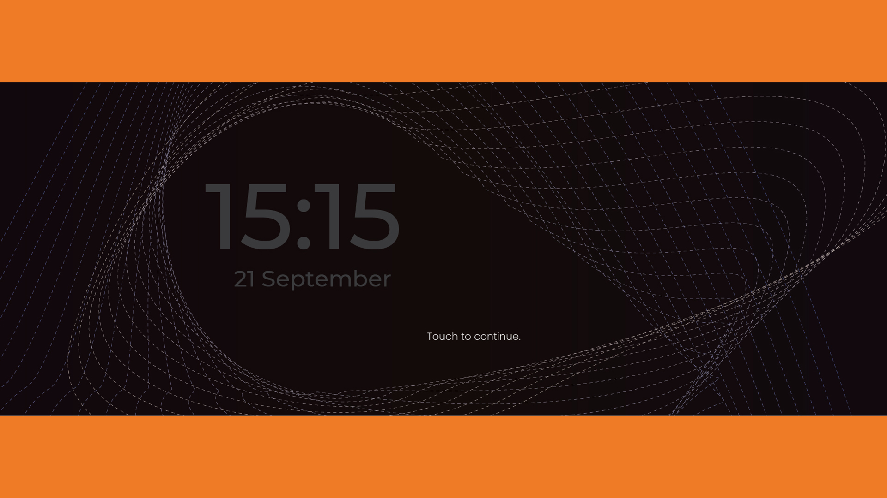
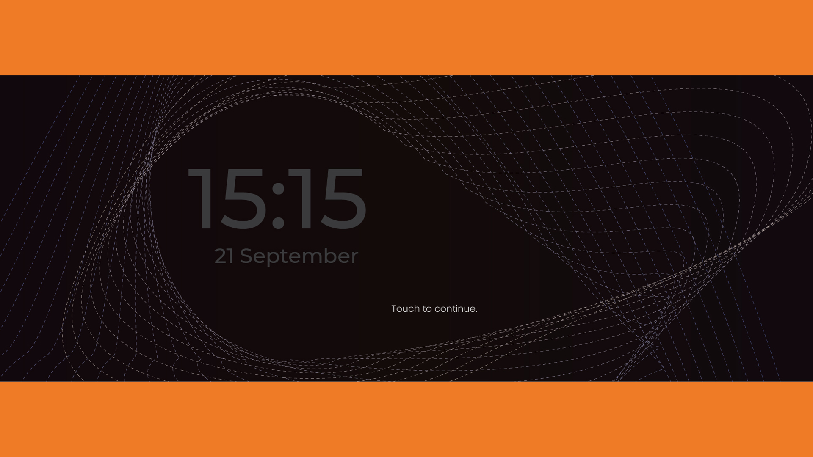

Atlas Os Theme Design
 


Project
For my final year project, I had the opportunity to collaborate with Acotech to design a new theme for the Interface Head Unit (Atlas Os) in Proton x50. The project took 10 weeks to complete.
Objectives
- To increase public interest towards Acotech and Atlas Os.
- Users (especially young adults) are requesting for newer look & feel theme outlook to be applied on their Interface Head Unit.
- The ATLAS theme was designed with users’ ease in mind; the design needs needed to be clear, concise, easy on the eye, and modern.
Concept
The idea of continuing the legacy of the Malayan Tiger into the future of digital designs came from watching the achievements of our inspirational athletes and the ever faithful fans behind them. The presence of the Tiger can be felt roaring within us as we beat our hearts as one to achieve everlasting legacy. The design principles of combining elements from the physical form of the Tiger and blending it with modern aesthetics allows the symbolic bravery and strength it represents to continue among us.